Castelli
Vivi
Questo progetto di tesi, intitolato “Rivivere i castelli della Svizzera italiana”, esplora il ruolo della comunicazione visiva nel contesto dei beni culturali.
I castelli
Oggi, i castelli del Ticino rappresentano preziose testimonianze del passato della regione e attraggono visitatori da tutto il mondo interessati alla storia, all'architettura e alla cultura locale. Molti di essi sono stati restaurati e aperti al pubblico, offrendo agli ospiti l'opportunità di esplorare le loro imponenti mura, torri maestose e sale riccamente decorate, mentre ammirano panorami mozzafiato sulle valli circostanti.
Inoltre, sono spesso sede di eventi culturali, mostre e manifestazioni, che contribuiscono a preservare e promuovere il patrimonio storico e artistico della regione. Attraverso la loro presenza imponente e il loro fascino intramontabile, questi antichi edifici continuano a giocare un ruolo significativo nella vita e nell'immaginario collettivo del Ticino, rappresentando un forte legame con il passato e una fonte di ispirazione per il futuro.
La varietà dei castelli riflette la diversità storica e architettonica della regione, offrendo ai visitatori un affascinante viaggio nel tempo attraverso epoche e stili differenti. Ognuno di loro ha la sua storia unica da raccontare, anche se si tratta di rovine, arricchendo così il patrimonio culturale e contribuendo alla sua identità unica nel panorama svizzero.
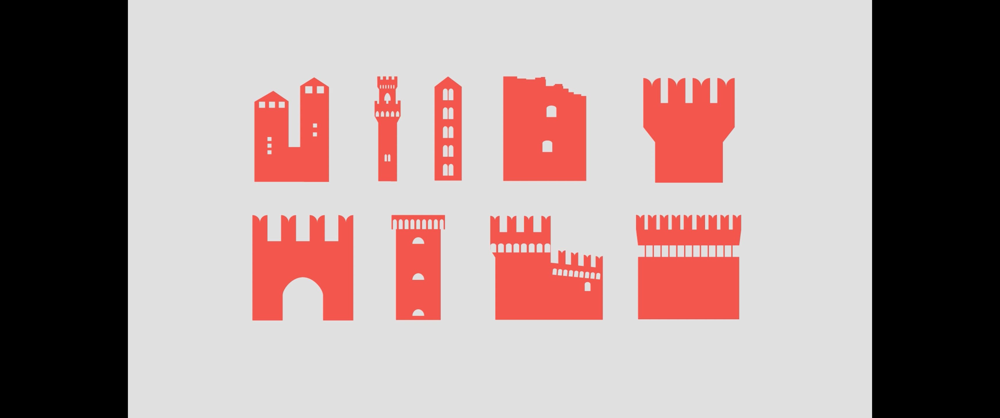
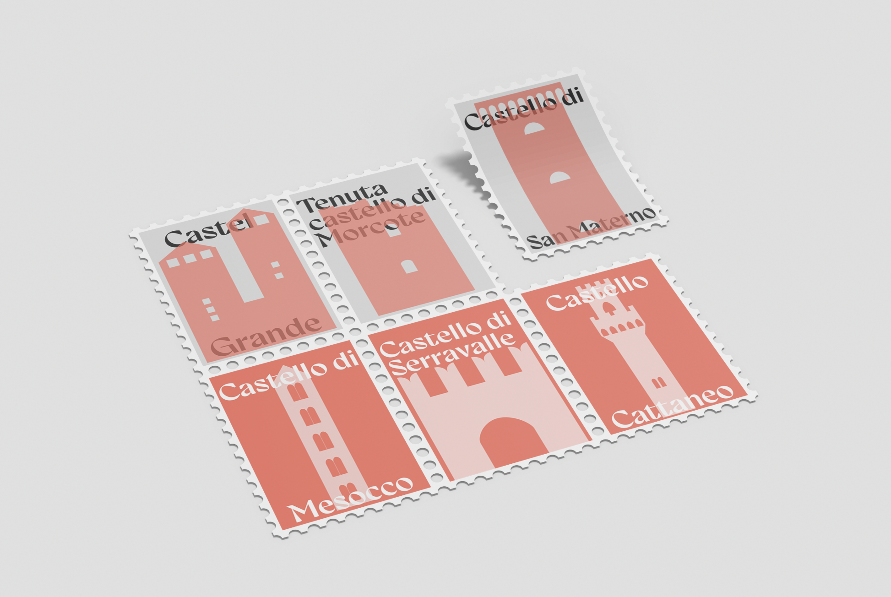
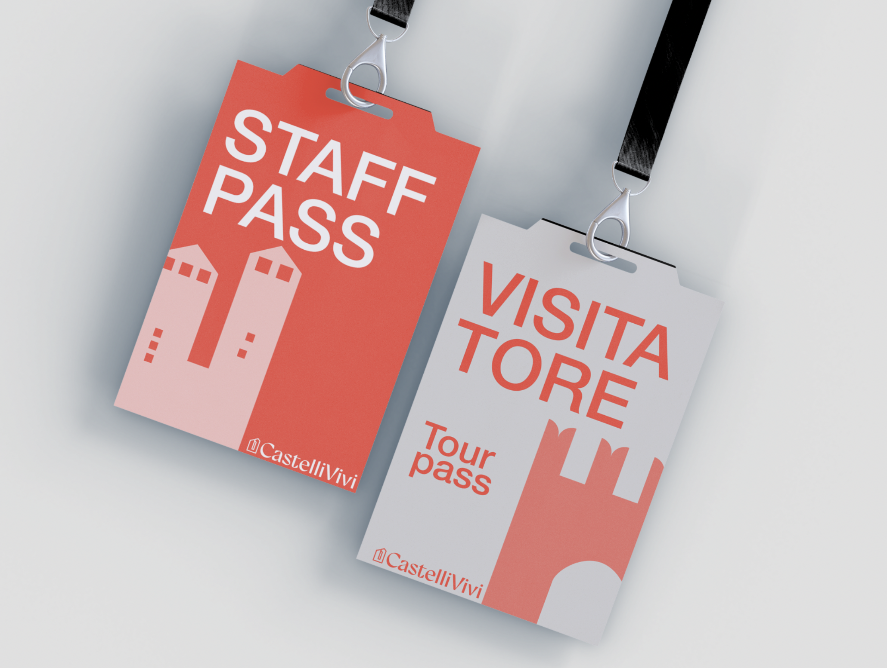
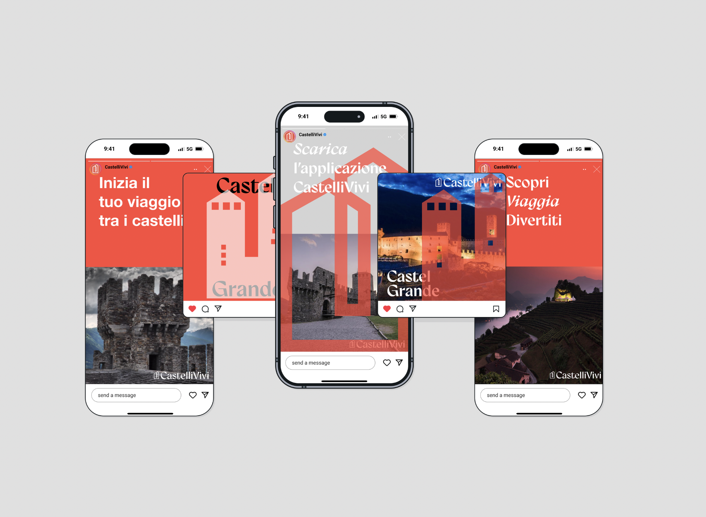
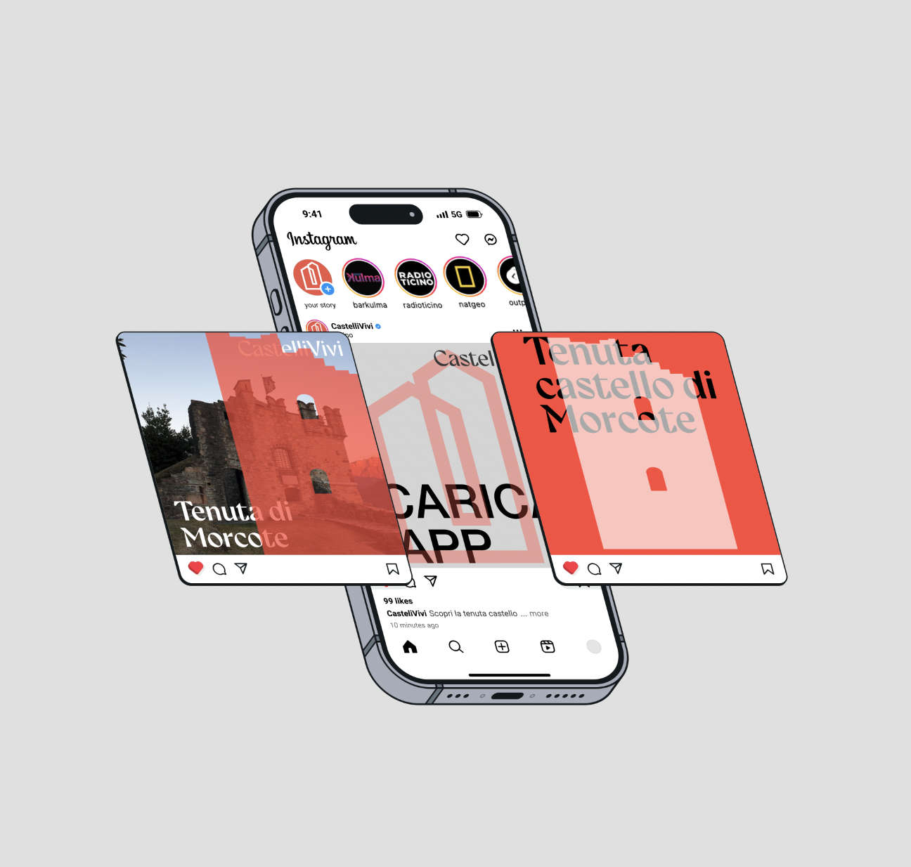
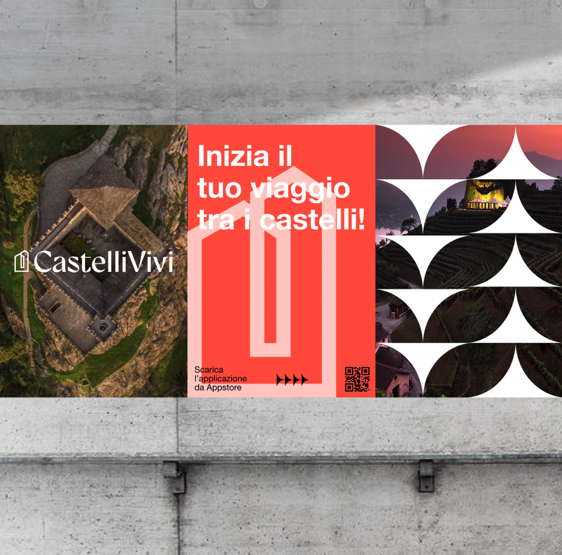
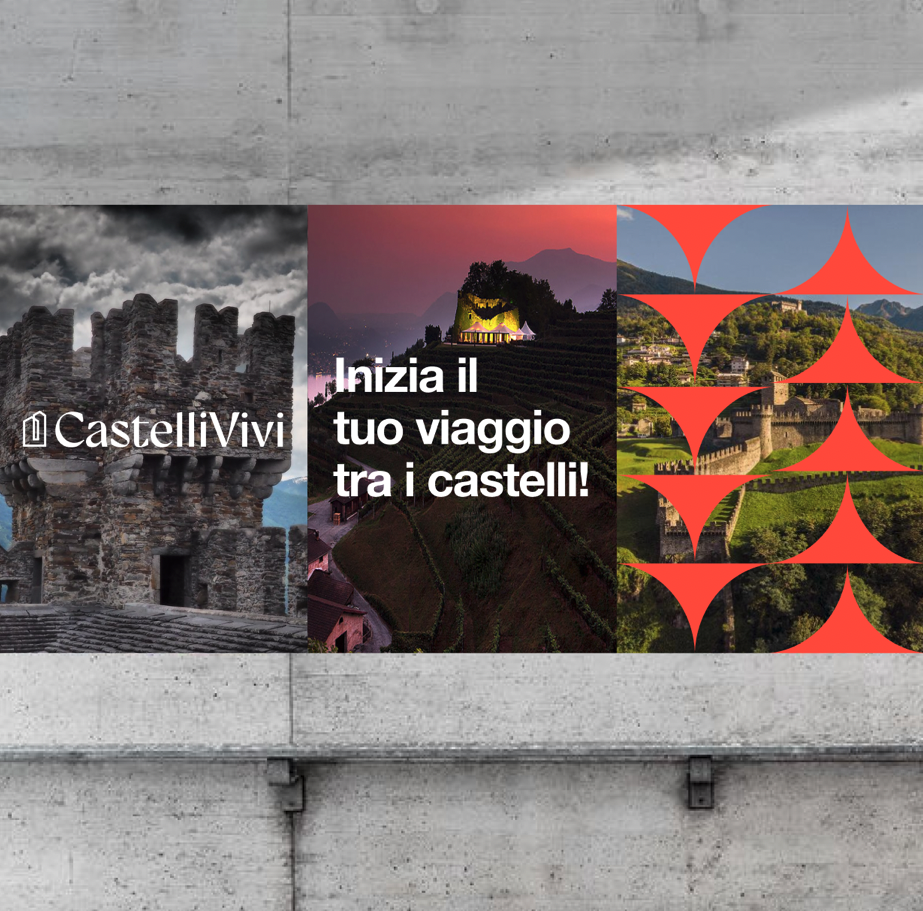
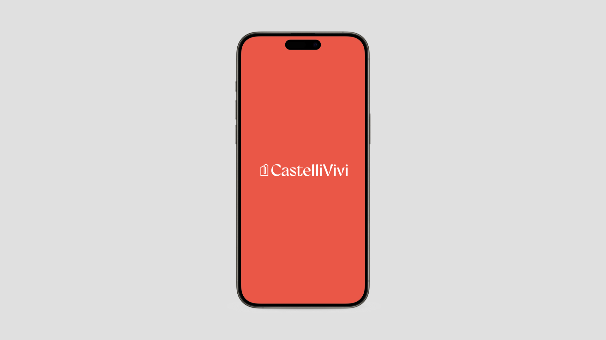
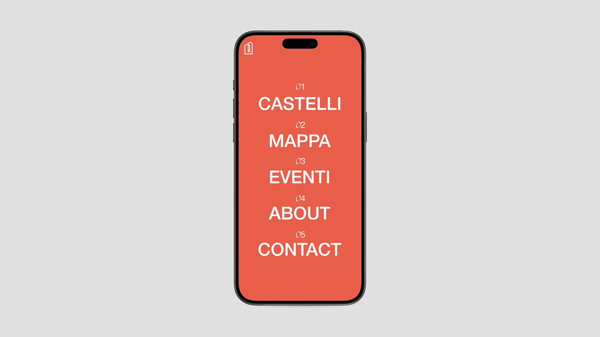
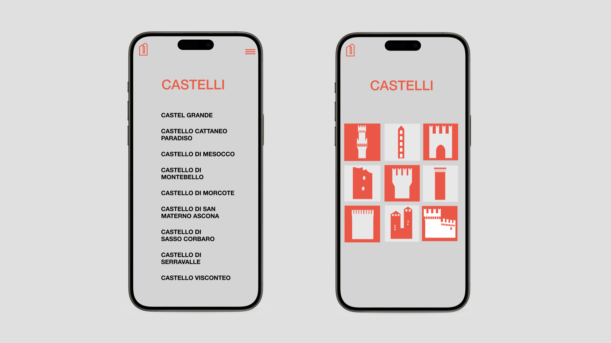
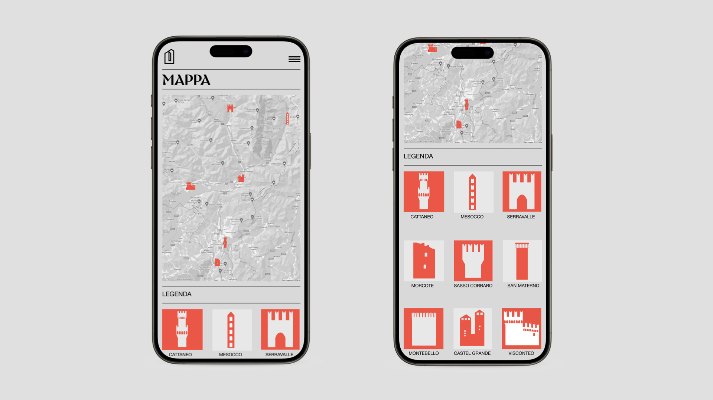
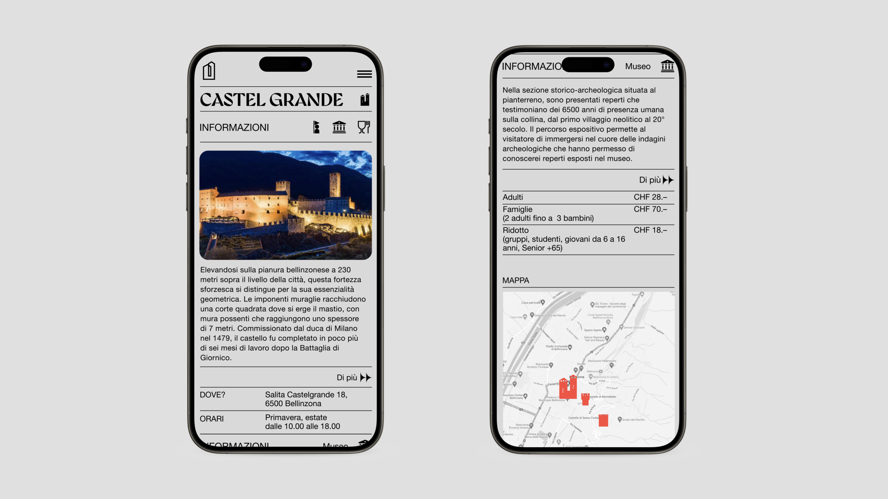
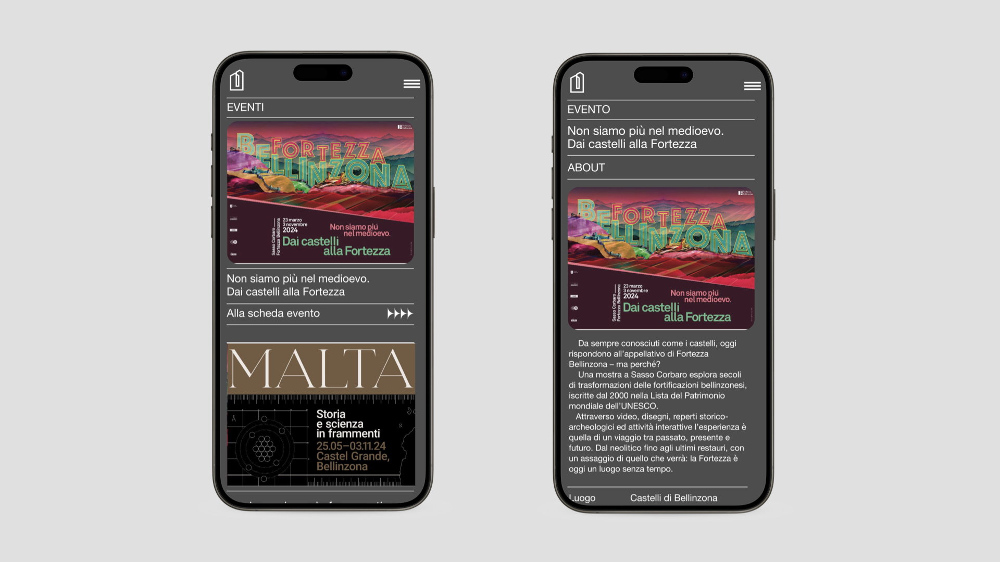
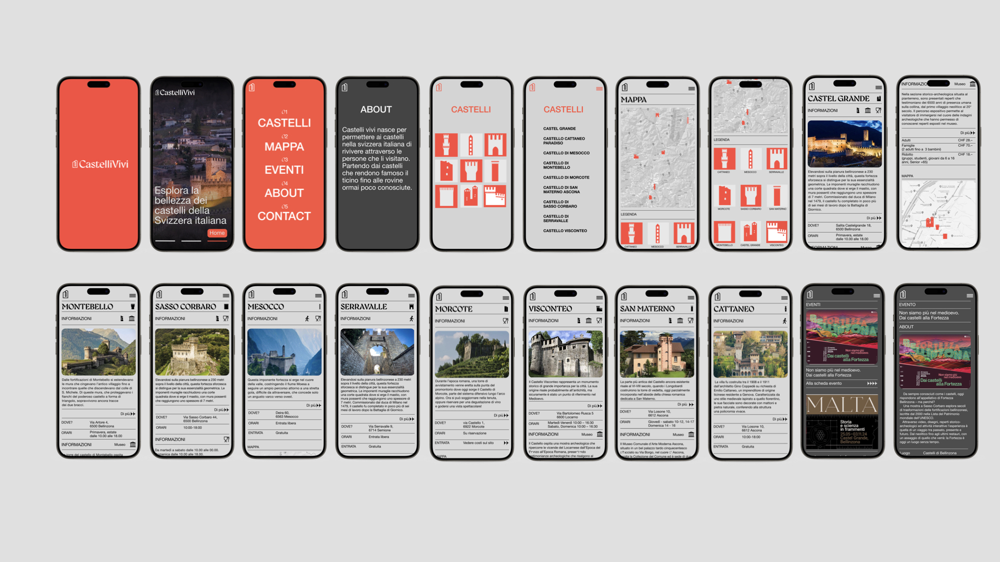